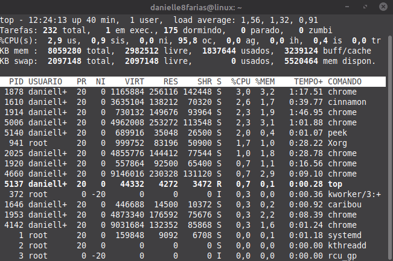
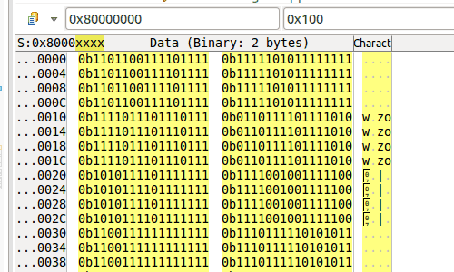
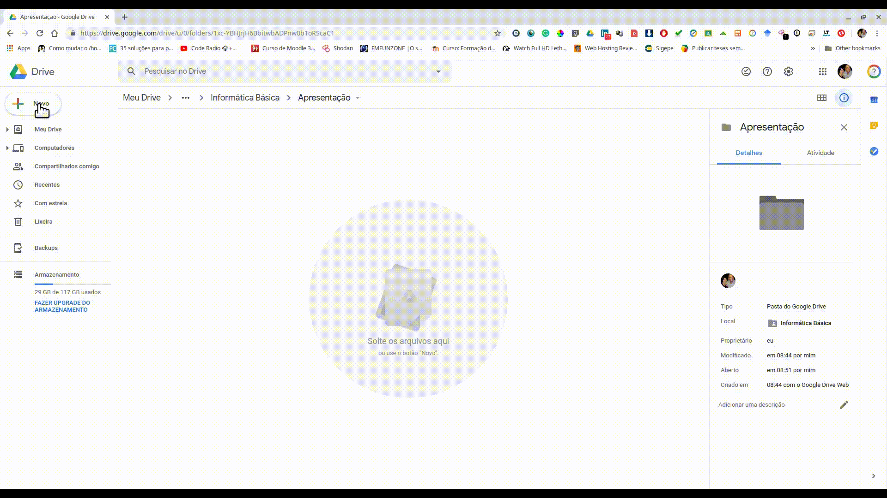

1º Entrada(Mais Conhecido como Boot)
A primeira etapa do funcionamento de um computador envolve a entrada de dados e informações no sistema. Isso pode ser feito por meio de
dispositivos de entrada, como teclado, mouse, tela sensível ao toque, microfone, câmera, scanner, etc. Os dados de entrada podem ser textos, números, imagens, áudio, vídeo e outros tipos de informações.

2º Processamento
Após a entrada de dados, o computador os processa. O processamento envolve a execução de instruções e operações em dados. A unidade central de
processamento (CPU) é o cérebro do computador e executa as instruções do programa armazenado na memória. Durante o processamento, os dados podem ser manipulados, calculados, comparados e transformados de várias maneiras.

3º Armazenamento
Os dados processados e as instruções do programa são armazenados em várias formas de memória. Existem diferentes tipos de memória em um computador, incluindo a memória RAM (Random Access Memory), que é usada para armazenar temporariamente dados e programas em execução, e a memória de armazenamento, como discos rígidos (HDDs) e unidades de estado sólido (SSDs), que armazenam dados de forma permanente, mesmo quando o computador está desligado.
4º Saída
Após o processamento dos dados, o computador fornece informações de saída. Isso pode ser feito por meio de dispositivos de saída, como monitores, alto-falantes, impressoras, telas sensíveis ao toque, entre outros. As informações de saída podem ser em forma de texto, gráficos, áudio, vídeo ou qualquer outra representação compreensível pelo usuário.
5º Controle
O controle é a etapa em que o computador gerencia todas as operações e coordena o fluxo de dados e instruções entre os diferentes componentes do sistema. Isso inclui o controle da CPU, a alocação de recursos de memória, a comunicação com dispositivos de entrada e saída, e a execução do sistema operacional e dos programas aplicativos. O controle garante que todas as partes do computador trabalhem juntas de maneira eficiente e coordenada.
